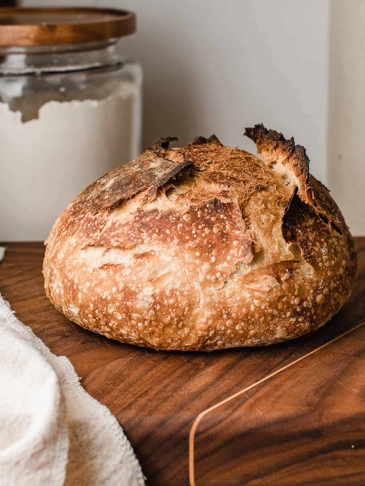

Bread

Description
This is a delicous bread recipe.
The overnight poolish adds an extra depth of flavour.
Ingredients
- 500g Bread flour
- 10g Instant Yeast
- 7g Salt
- 350g warm water
Steps
- The night before baking, in a medium bowl mix 100g of flour, 100g of water and a pinch of Yeast. Cover and leave it overnight to proof. This is called a poolish.
- In a bowl of a stand mixer, add the water and poolish and stir until combined
- Add in the Flour, Yeast and Salt and mix on medium speed for 10 minutes until dough is soft and stretchy
- Put the dough in a lightly oiled bowl, cover and let it proof on the bench for 1 hour until the dough dobles in size
- Remove the dough from the bowl and on a floured surface, punch out the air and fold and roll the dough to make a taut ball
- Let the dough rise covered on the bench on a sheet of baking paper for another hour
- Pre heat the oven to 250 degrees celcius with a dutch oven on the shelf
- Place the dough in the dutch oven,with the baking paper, score the top and close the lid, bake for 15 minutes
- Open the dutch oven and bake for a further 20 minutes
- Remove the bread from oven a let it cool before slicing